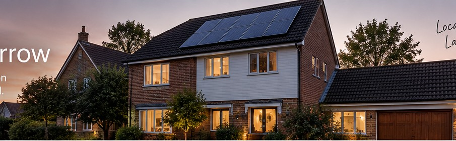
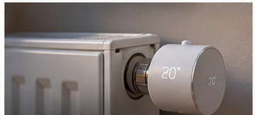
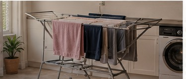

01 · Energy optimisation
Get more from the energy system you already own.
Coordinate solar, batteries, EV charging, heating, hot water and flexible tariffs instead of managing every system separately.
Explore energy optimisation →
We connect your heating, solar, battery, EV charging, lighting, blinds and security, so the technology you already own works together automatically.
Most homes don't need everything ripped out and replaced. We start with what you already have, work out what can sensibly be connected, and add open local automation where it makes a real difference.
Coordinate solar, batteries, EV charging, heating, hot water and flexible tariffs instead of managing every system separately.
Explore energy optimisation →
Lighting, blinds, routines, presence, security and voice control, designed around how your household actually behaves.
Explore automation →
Hue. Tado. Alexa. Ring. Solar. Smart plugs. EV charger. Six apps. One home. We make the pieces cooperate.
See it working →Model the options before committing to a system, without needing to sell you a particular panel or battery.
Independent energy advice →The useful part of a smart home should disappear into everyday life.
We're based in Guildford, not a national lead-generation website pretending to be local.
We design around outcomes, reliability and sensible failure modes, and prove ideas in our own test house.
We favour systems that work locally and avoid unnecessary lock-in to one manufacturer's ecosystem.

Room-by-room demand can control the central system.

Humidity and power use can tell the house when the job is done.

Garage doors, alarms and older equipment can often join the wider system.

Blinds, lights and music can follow the household schedule together.
Serving homes across Guildford and surrounding Surrey with local installation and ongoing support.
High bills, five incompatible apps, blinds you always forget, an EV charging at the wrong time, or simply an idea you want to explore.
We look at the existing systems, network, electrical constraints and the devices worth keeping.
Clear scope, clear price, and an explanation of what will happen automatically versus what remains under manual control.
No mystery box. You get a system designed to remain usable even when the novelty has worn off.